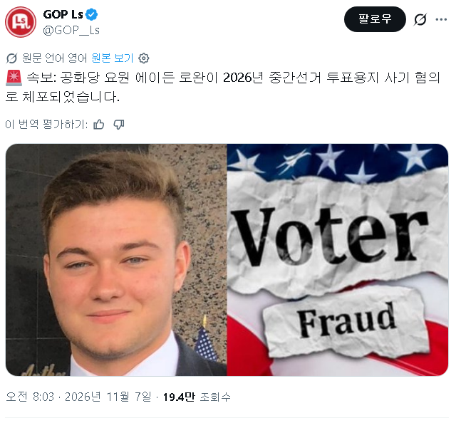

공화당 소속 뉴욕 지역 예비선거 후보자, 에이든 로완이
위조한 투표 용지를 제출한 혐의로 기소됐다.

공화당 소속 뉴욕 지역 예비선거 후보자, 에이든 로완이
위조한 투표 용지를 제출한 혐의로 기소됐다.
역시 관상은 과학
럼프 아들인줄
*정치 컨설팅 회사 운영 ㅅㅂㅋㅋ


민주당의 아버지는 트황ㅋㅋ
정상화는 역시 트황 ㅋㅋ
부정선거 ㅎㄷㄷ
어 이거 완전 한국의 다크나이트 누구랑 비슷한
ㅋㅋㅋㅋㅋㅋㅋ 같은팀에서 적발
조작했는데 졌다고? ㅋㅋㅋㅋㅋㅋㅋㅋ
ㄷㄷ
우리나라랑 똑같네 ㅋㅋㅋㅋ 극우들끼리는 통하는게 있나봄
역시 민주당농가 살리기는 트황!